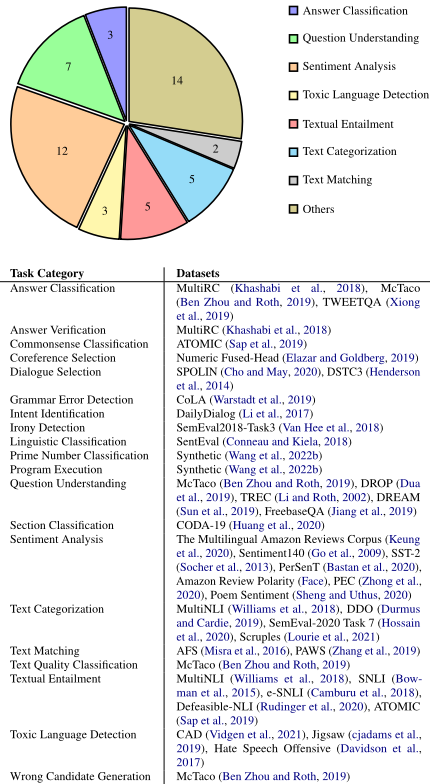
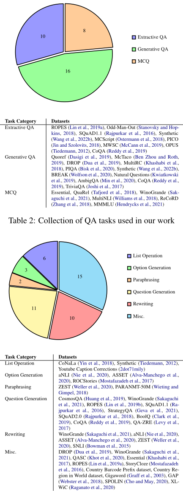

基于伪代码指令的提示方法（Prompting with Pseudo-Code Instructions）
该论文研究用伪代码替代自然语言作为 LLM 指令提示能否提升效果：针对自然语言指令固有的歧义与欠规范问题，作者基于 Super-NaturalInstructions 数据集为 132 个任务（28 类任务、72 个数据集）手工编写了 Python 风格的伪代码提示，在 BLOOM 与 CodeGen 两个模型家族（2B-7B）上进行 0-shot 对比实验。结果显示伪代码提示在分类任务上带来 7-16 点绝对 F1 提升，在全部任务上带来 12-38% 的相对 ROUGE-L 提升；消融实验表明函数原型、docstring、行内注释与结构线索均有贡献，且把注释/docstring 移植到自然语言提示中同样有效。此外，代码模型 CodeGen 即使使用自然语言提示也优于 BLOOM，伪代码+代码模型是最佳组合；但 QA 任务上 BLOOM 用自然语言反而更好，且 2-shot 伪代码提示性能反而低于 0-shot。对团队而言，这是一篇提示工程方向的实证研究，提供了'伪代码指令'这一零训练成本、可直接 A/B 验证的提示模式及其生效要素分析。
自然语言指令存在歧义且欠规范，可能被模型以多种方式解读，甚至详细指令也会增加模型推理复杂度。论文验证一个假设：用歧义更低、结构更清晰的伪代码风格指令提示预训练语言模型，能否比自然语言指令获得更好的任务表现。
作者为 Super-NaturalInstructions 中 132 个英文任务手工编写 Python 风格伪代码指令（遵循 PEP 8，包含四要素：函数原型、docstring、函数定义/子任务函数调用、行内注释，并为每个任务配可执行的 Python 输入预处理器，用自动测试校验参数类型与数量一致性）。在 BLOOM-3B/7B、CodeGen-mono 2B/6B（附录另含 Falcon-7B）上做 0-shot/2-shot 对比与消融：对比自然语言指令、仅函数原型、仅示例（2-shot）、无指令的函数调用等提示风格；分别移除 docstring/注释，或将伪代码的注释与 docstring 加入自然语言提示，量化结构与文档要素各自的贡献。所有实验使用 greedy decoding，输出截断至 100 token 并做后处理。
0-shot 下伪代码提示在分类任务上带来 7-16 点绝对 weighted F1 提升，全部任务上 ROUGE-L 相对提升 12-38%
消融显示 docstring、代码注释与伪代码结构线索均贡献了性能提升；将注释与 docstring 加入自然语言提示同样能提升其表现
CodeGen（代码模型）即使使用自然语言提示，总体性能也优于 BLOOM；伪代码提示+代码模型是所有提示-模型组合中性能最好的配置
QA 任务中伪代码提示仅在 CodeGen 上优于自然语言提示，BLOOM 上则相反；但多选题（MCQ）类 QA 任务上伪代码提示始终更优
2-shot 伪代码提示的性能反而低于对应的 0-shot 配置（附录 Table 9）
Falcon-7B 上同样观察到伪代码提示在几乎所有任务上性能更高（附录 Table 8）
据作者所知，这是首个证明伪代码提示能提升预训练 LM 表现的工作；与同期工作（如 Zhang et al. 2023a）结论不同，他们在更广泛任务集上发现伪代码确实优于自然语言指令。此外系统消融了函数原型、docstring、注释等结构要素的贡献，并发现将伪代码注释/docstring 移植到自然语言提示也能带来增益，提示增益可能部分来自伪代码注释引发的一种 step-by-step 推理效果。
相关度级别：high
命中能力域：3.2 提示工程
理由：直接命中 3.2 提示工程能力域：论文核心就是提示技术与模式的设计与实证对比，给出了可操作的伪代码提示模板结构（函数原型+docstring+行内注释）以及各要素贡献的消融分析。对以'用好模型'为目标的团队，这提供了一种无需训练、可在现有 LLM 应用上直接 A/B 验证的提示改写模式，尤其适用于输出格式复杂、选项/字段要求多的结构化任务（论文中 MCQ 类任务始终受益的发现与此对应）。其 132 任务提示数据集与多提示风格对比流程对评测方法也有参考价值。需注意实验基于 2023 年的非指令微调模型（BLOOM/CodeGen），结论向现代 chat 模型迁移需自行验证。
建议动作：作为方法参考存档
arXiv:2305.11790v3 [cs.CL] 2023年10月19日
∗ ∗
IBM Research AI
{mayank.mishra1,prince.kumar12, riyaz.bhat,danish.contractor}@ibm.com, {rmurthyv,srikanth.tamilselvam}@in.ibm.com
使用自然语言指令进行提示（prompting）近来已成为一种利用大语言模型（LLM）能力的流行方法。鉴于自然语言中固有的歧义性，一个直观的想法是：采用歧义性较低的提示风格（如伪代码）进行提示，或许能带来某些优势。
在本文中，我们探讨了通过伪代码指令进行提示是否有助于提升预训练语言模型的性能。我们手动创建了一个数据集 1，为涵盖分类、问答（QA）和生成式语言任务在内的 132 个不同任务构建了伪代码提示，这些任务均来源于 Super-NaturalInstructions 数据集（Wang et al., 2022b）。利用这些提示及其对应的自然语言版本，我们在两个 LLM 家族——BLOOM（Scao et al., 2023）和 CodeGen（Nijkamp et al., 2023）——上研究了它们的性能。我们的实验表明，使用伪代码指令能带来更好的结果：分类任务的 F1 分数平均提升（绝对值）7-16 个点，所有任务的总体 ROUGE-L 分数提升（相对值）12-38%。我们还纳入了详细的消融研究，结果表明代码注释、文档字符串（docstring）以及伪代码中编码的结构性线索都对性能提升有所贡献。据我们所知，我们的工作是首个证明伪代码提示有助于提升预训练语言模型（LM）性能的研究。
鉴于自然语言中固有的歧义性，一个直观的想法是考虑采用歧义较少的提示风格（例如使用伪代码）进行提示的优势。伪代码是一组非正式的、类似代码的构造，通常对人类而言易于解读，但不一定可编译/可执行。伪代码常被用来表达复杂的思想、过程和流程——例如，Algorithm 1 以伪代码形式表达了多头注意力（Multi-Head Attention）模块（Vaswani et al., 2017）内部所发生过程的概括版本。可以说，用自然语言表达同样的思想可能会产生歧义，或许还需要详细的文字才能表达清楚，这会增加复杂性。
鉴于代码模型近期在自然语言处理（NLP）任务中取得的成功（Madaan et al., 2022; Zhang et al., 2023a,b），本研究旨在检验使用伪代码指令进行提示作为提升模型性能手段的有效性。本研究的动机源于这样一个假设：由于伪代码能够更简洁、更清晰地表达思想，将伪代码用作提示可以为模型在 NLP 任务中带来天然优势。为了检验“用伪代码而非自然语言数据来提示大语言模型（LLM）可能有所帮助”这一假设，我们为 132 个不同任务创建了伪代码提示 2，这些任务涵盖 28 种不同的任务类型，均源自 Super-NaturalInstructions 数据集（Wang et al., 2022b）（示例见 Listing 1）。我们将这些提示与其对应的自然语言提示一起，研究了它们在两个 LLM 家族——BLOOM（Scao et al., 2023）和 CodeGen（Nijkamp et al., 2023）——上的表现。这两个 LLM 家族都曾在自然语言和代码数据上进行训练。
2 这些任务各自的伪代码指令均由本文作者创建。
我们在分类任务、问答（QA）任务以及其他多种语言生成任务的混合任务上比较了这两种风格提示的性能。我们的实验表明，使用伪代码指令进行提示确实有效：在分类任务上 F1 分数获得 7-16 个百分点的绝对提升，在所有任务上总体 ROUGE-L 分数相对提升 12-38%。
贡献：总而言之，本文做出了以下贡献：(i) 我们发布了一个包含 132 个伪代码提示、涵盖 28 种不同任务类型的数据集；(ii) 通过在两个公开可用的开放访问 LLM 家族上进行的一系列详细实验，我们证明了使用伪代码指令进行提示相比使用自然语言指令进行提示能带来显著的性能提升；(iii) 我们给出了详细的消融实验，表明代码注释、文档字符串（docstrings）以及伪代码中编码的结构线索都对性能提升有所贡献。
据我们所知，我们的工作是首个证明伪代码提示（pseudo-code prompts）3 如何有助于提升预训练语言模型（LMs）性能的研究。我们的发现不仅强调了利用伪代码进行提示的重要性，还揭示了伪代码中促成所观察到的性能提升的具体要素。
在指令数据集上对大语言模型进行微调可以提升其性能，甚至提升其泛化到未见任务的能力（Wei et al., 2021; Chung et al., 2022）。指令微调的许多方面，例如任务数量、模型规模以及在思维链（chain-of-thought, CoT）数据上进行微调，均已被发现是有用的（Chung et al., 2022）。因此，人们在人工创建指令数据集，以及利用现有生成式模型来训练和评估语言模型方面投入了大量精力（Mishra et al., 2021; Bach et al., 2022; Wang et al., 2022b,a）。指令微调数据集中可用的指令大多为自然语言形式，但已被应用于自然语言任务和编程任务。然而，自然语言指令的替代形式，例如编程语言代码、伪代码、符号（MacCartney and Manning, 2007）等，即便对于编程任务也尚未得到充分探索。与自然语言相比，代码或伪代码由于其使用有助于完成任务的函数或步骤这一固有特性，而具有更少的歧义性。这使得它们成为指定指令的天然选择。最近，少数工作（MarvinAI; Madaan et al., 2022; Zhang et al., 2023a,b）探索了将代码和伪代码作为输入。与 Zhang et al. (2023a) 的同期工作不同，我们发现伪代码指令在多种多样的任务上确实比自然语言（NL）指令带来更好的性能。
3 在本文的其余部分，我们在提及提示（prompts）时交替使用“伪代码”（pseudo-code）和“代码”（code）这两个词。
Super-NaturalInstructions 数据集（Wang et al., 2022b）包含 1,616 个多样化的自然语言处理（NLP）任务，每个任务包含任务指令、正例/负例以及实例。我们采样了 132 个不需要多语言能力的任务，组成一个混合任务集，并使用 Python 构造为该数据集的一个子集重写了指令。请注意，我们借用 Python 构造只是为了以伪代码的形式表达我们的提示，这些提示并不会产生可执行的 Python 代码。此外，我们没有加入原始自然语言指令中不存在的任何额外步骤/指令。
所有任务指令均遵循清单 1 中所述的模式（schema）。该模式由以下要素组成。
函数原型（Function Prototype）：定义主伪代码函数的原型。函数名具有描述性，能够概括所要执行的任务。函数原型中还包含作为输入传入的所有变量及其数据类型，以及返回类型。我们遵循 PEP 8⁴ 风格指南来编写伪代码，并使用强类型的原型。我们尽可能避免声明全局变量，而是将其作为参数传递给方法。在可能的范围内，我们也避免使用类和枚举。清单 1 中的第 1 行给出了一个情感分类任务的函数原型示例。
DocString（文档字符串）：docstring 以自然语言提供关于所要执行任务的详细说明。通常，它是原始自然语言指令的改写版本。docstring 的结尾列出了所传递的参数（及其类型）以及函数的返回类型。清单 1 中第 2 至 12 行给出了情感分类任务的 docstring 示例。
4 https://peps.python.org/pep-0008/
函数定义（Function Definition）：包含伪代码指令的主体部分，描述如何解决特定任务。在可能的范围内，函数定义不会遗漏 docstring 中包含的任何信息。函数定义中的伪代码被编写为子任务函数。这些子任务函数通常不会被定义，并且往往使用具有描述性的名称、参数和变量。如有需要，我们会加入行内注释，说明子任务函数所完成的工作以及各参数的作用。有时我们还会定义次级子任务函数，前提是该子任务需要额外的细节，或者描述性函数名可能不足以明确该子任务函数的目标。我们假定可以使用 concat_str、search 等基础辅助函数，并且不包含任何 import 语句。
第 13 至 16 行给出了情感分类任务的函数定义。该函数调用了 sentiment_is_positive 子任务函数，用于检查给定句子的情感是否为正面。该函数在指令中并未被显式定义。
预处理器：由于伪代码指令期望将输入作为参数传入，我们需要对 SuperNaturalInstructions 数据集（Wang et al., 2022b）中提供的输入进行解析（该数据集提供预先格式化好的输入）。对于每条伪代码指令，我们还附带了一个可执行的 python 预处理器，用于解析输入。
我们为 132 个任务创建了指令，这些任务均具有英文的指令和输入/输出对。我们将这些任务分为三类：分类任务（表 1）、问答（QA）任务（表 2）以及其他语言生成任务（表 3）。这些任务共涵盖 28 个不同的类别，涉及 72 个不同的数据集。对于每个任务，我们采样 1000 个实例用于评估。
为了研究通过伪代码指定指令是否比基线的自然语言（NL）英文指令能带来更好的性能，我们选择在 BLOOM（Scao et al., 2023）和 CodeGen（Nijkamp et al., 2023）模型上进行实验。我们之所以选择这些模型，是因为它们尚未在 Natural Instructions 数据集上进行过指令微调。此外，两者都曾在代码和自然语言数据上进行过训练。
| Task Category | Datasets |
|---|---|
| Answer Classification | MultiRC (Khashabi et al., 2018), McTaco (Ben Zhou and Roth, 2019), TWEETQA (Xiong et al., 2019) |
| Answer Verification Commonsense Classification | MultiRC (Khashabi et al., 2018) ATOMIC (Sap et al., 2019) |
| Coreference Selection Dialogue Selection | Numeric Fused-Head (Elazar and Goldberg, 2019) SPOLIN (Cho and May, 2020), DSTC3 |
| (Henderson et al., 2014) | |
| Grammar Error Detection | CoLA (Warstadt et al., 2019) |
| Intent Identification | DailyDialog (Li et al., 2017) |
| Irony Detection | SemEval2018-Task3 (Van Hee et al., 2018) |
| Linguistic Classification | SentEval (Conneau and Kiela, 2018) |
| Prime Number Classification | Synthetic (Wang et al., 2022b) |
| Program Execution | Synthetic (Wang et al., 2022b) |
| Question Understanding | McTaco (Ben Zhou and Roth, 2019), DROP (Dua et al., 2019), TREC (Li and Roth, 2002), DREAM (Sun et al., 2019), FreebaseQA (Jiang et al., 2019) |
| Section Classification Sentiment Analysis | CODA-19 (Huang et al., 2020) The Multilingual Amazon Reviews Corpus (Keung et al., 2020), Sentiment140 (Go et al., 2009), SST-2 (Socher et al., 2013), PerSenT (Bastan et al., 2020), Amazon Review Polarity (Face), PEC (Zhong et al., |
| Text Categorization | 2020), Poem Sentiment (Sheng and Uthus, 2020) MultiNLI (Williams et al., 2018), DDO (Durmus and Cardie, 2019), SemEval-2020 Task 7 (Hossain et al., 2020), Scruples (Lourie et al., 2021) |
| Text Matching | AFS (Misra et al., 2016), PAWS (Zhang et al., 2019) |
| Text Quality Classification | McTaco (Ben Zhou and Roth, 2019) |
| Textual Entailment | MultiNLI (Williams et al., 2018), SNLI (Bow- man et al., 2015), e-SNLI (Camburu et al., 2018), Defeasible-NLI (Rudinger et al., 2020), ATOMIC (Sap et al., 2019) CAD (Vidgen et al., 2021), Jigsaw (cjadams et al., |
| Toxic Language Detection | 2019), Hate Speech Offensive (Davidson et al., 2017) |
| Wrong Candidate Generation | McTaco (Ben Zhou and Roth, 2019) |
| Task Category | Datasets |

BLOOM 模型在 ROOTS 语料库（Laurençon et al., 2022）上训练，该语料库由 46 种自然语言和 13 种编程语言组成。而 CodeGen 模型则在 Pile 语料库（Gao et al., 2020）以及 Google 公开提供的 BigQuery 和 BigPython 数据集（Nijkamp et al., 2023）上训练。BLOOM 模型是在自然语言与代码的混合数据上同时训练的。至于我们所使用的 CodeGen 模型，它们最初在自然语言上进行训练，随后又接受了专门针对 Python 代码的额外训练。
| Task Category | Datasets |
|---|---|
| Extractive QA | ROPES (Lin et al., 2019a), Odd-Man-Out (Stanovsky and Hop- kins, 2018), SQuAD1.1 (Rajpurkar et al., 2016), Synthetic (Wang et al., 2022b), MCScript (Ostermann et al., 2018), PICO (Jin and Szolovits, 2018), MWSC (McCann et al., 2019), OPUS (Tiedemann, 2012), CoQA (Reddy et al., 2019) |
| Generative QA | Quoref (Dasigi et al., 2019), McTaco (Ben Zhou and Roth, 2019), DROP (Dua et al., 2019), MultiRC (Khashabi et al., 2018), PIQA (Bisk et al., 2020), Synthetic (Wang et al., 2022b), BREAK(Wolfson et al., 2020), Natural Questions (Kwiatkowski et al., 2019), AmbigQA (Min et al., 2020), CoQA (Reddy et al., 2019), TriviaQA (Joshi et al., 2017) |
| MCQ | Essential, QuaRel (Tafjord et al., 2018), WinoGrande (Sak- aguchi et al., 2021), MultiNLI (Williams et al., 2018), ReCoRD (Zhang et al., 2018), MMMLU(Hendrycks et al., 2021) |
| Task Category | Datasets |
| Task Category | Datasets |
|---|---|
| List Operation | CoNaLa (Yin et al., 2018), Synthetic (Tiedemann, 2012), Youtube Caption Corrections (2dot71mily) |
| Option Generation | aNLI (Nie et al., 2020), ASSET (Alva-Manchego et al., 2020), ROCStories (Mostafazadeh et al., 2017) |
| Paraphrasing | ZEST (Weller et al., 2020), PARANMT-50M (Wieting and Gimpel, 2018) |
| Question Generation | CosmosQA (Huang et al., 2019), WinoGrande (Sakaguchi et al., 2021), ROPES (Lin et al., 2019b), SQuAD1.1 (Ra- jpurkar et al., 2016), StrategyQA (Geva et al., 2021), SQuAD2.0 (Rajpurkar et al., 2018), BoolQ (Clark et al., 2019), CoQA (Reddy et al., 2019), QA-ZRE (Levy et al., 2017) |
| Rewriting | WinoGrande (Sakaguchi et al., 2021), aNLI (Nie et al., 2020), ASSET (Alva-Manchego et al., 2020), ZEST (Weller et al., 2020), SNLI (Bowman et al., 2015) |
| Misc. | DROP (Dua et al., 2019), WinoGrande (Sakaguchi et al., 2021), QASC (Khot et al., 2020), Essential (Khashabi et al., 2017), ROPES(Lin et al., 2019a), StoryCloze (Mostafazadeh et al., 2016), Country Barcode Prefix dataset, Country Re- gion in World dataset, Gigaword (Graff et al., 2003), GAP (Webster et al., 2018), SPOLIN (Cho and May, 2020), XL- WiC (Raganato et al., 2020) |
| Task Category | Datasets |

我们对模型的选择使我们能够搭建一个受控环境，从而研究以自然语言和伪代码进行提示所产生的影响。
近期的大多数指令微调模型要么已经以某种形式接触过 Super-NaturalInstructions 数据集（Wang et al., 2022b）（Longpre et al., 2023），要么其分词器无法有效处理代码语法（Raffel et al., 2020），因此无法用于我们的研究。通过实证研究模型在这些提示上的表现，我们希望为未来使用伪代码指令训练指令微调模型的工作提供参考。
在本文进行的所有实验中，我们使用 BLOOM-3B、BLOOM 7B（Scao et al., 2023）、CodeGen-mono 2B 和 CodeGen-mono 6B（Nijkamp et al., 2023）模型。推理在 A100 80 GB GPU 上进行。为了加速所有模型的推理，我们采用 fp16 精度的 DeepSpeedInference（Aminabadi et al., 2022），与标准的 HuggingFace（Wolf et al., 2020）推理相比，平均推理吞吐量提升约 1.7 倍。为保证可复现性，我们在所有实验中均使用贪心解码（greedy decoding），并将生成输出限制在 100 个 token 以内。即使是分类任务，我们也使用自回归解码（auto-regressive decoding）来生成类别标签，而不是选择困惑度（perplexity）最低的类别标签。这样做的原因是，对于所有任务而言，并非所有类别标签都能映射到单个 token。这种评估分类任务性能的技术在使用封闭式大语言模型（LLM）时经常被采用，例如通过 API 提供的模型（如 OpenAI 的 GPT4（OpenAI, 2023）、Google 的 PaLM（Chowdhery et al., 2022）等）。
我们对每个任务类别采用不同的度量指标：对于分类任务，我们使用微平均（micro）、宏平均（macro）和加权（weighted）F1 分数来衡量其性能；对于问答（QA）和语言生成任务，我们使用 ROUGE-L 指标。我们为所有任务报告 ROUGE-L、精确匹配（Exact Match, EM）以及 ANLS——平均归一化 Levenshtein 相似度（Average Normalized Levenshtein Similarity）（Biten et al., 2019）。
由于我们实验所用的模型并未针对指令遵循（instruction following）进行微调，它们往往会在给定任务的输出之后生成多余的文本。因此，我们对输出进行后处理，以确保模型不会因多余的生成内容而在我们的评估中受到惩罚。我们通过按换行符 '\n' 截断的方式对所有输出进行后处理。此外，输出还会经过额外的后处理，包括去除标点符号和转换为小写。
通过我们的实验，我们旨在回答以下问题：（i）对预训练语言模型和代码模型分别使用伪代码提示与自然语言提示时，性能有何差异？（ii）模型规模的增大如何影响伪代码提示的有效性？（iii）结构化提示（例如使用函数名、文档字符串、行内注释和参数）在多大程度上会影响任务性能？
表4比较了在零样本（0-shot）设置下使用伪代码提示（称为代码指令）与自然语言指令的性能。结果已按模型家族和规模进行分组。
可以看出，对于所有模型家族和规模，使用伪代码提示均带来了显著的性能提升。在分类任务上的性能尤为突出，例如，加权F1的提升介于7-16个F1点（绝对值）之间。此外，以ROUGE-L衡量，所有其他任务的相对性能提升介于12-38%之间。以ROUGE-L、ANLS和Exact Match衡量的总体性能也呈现出相似的趋势。
CodeGen与BLOOM的比较：尽管大多数任务并非代码任务，但专为代码应用设计的模型CodeGen即使在使用自然语言指令时也优于BLOOM模型（参见"All Tasks"的指标）。类似的行为已有轶事式的报道（Fu and Khot, 2022; Madaan et al., 2022），但可能尚未在本文所展示的如此多的任务上得到研究。然而，需要注意的是，在代码模型中使用伪代码提示能取得比任何其他提示-模型配置更好的性能。
问答（QA）任务上的性能：有趣的是，我们发现当使用CodeGen模型时，在QA任务上伪代码指令的性能优于自然语言指令。然而，使用BLOOM时情况并非如此。
| Model. | Instruction Format. | Classification Tasks.Macro F1 | Classification Tasks.Micro F1 | Classification Tasks.Weighted F1 | QA Tasks.ROUGE-L | Generation tasks.ROUGE-L | All Tasks.ROUGE-L | All Tasks.ANLS | All Tasks.EM |
|---|---|---|---|---|---|---|---|---|---|
| Majority Class | 0.296 | 0.509 | 0.362 | - | - | - | - | - | |
| CodeGen 2B | Code Instructions | 0.272 | 0.417 | 0.354 | 0.175 | 0.317 | 0.330 | 0.261 | 0.202 |
| CodeGen 2B | NL Instructions | 0.068 | 0.306 | 0.239 | 0.154 | 0.254 | 0.265 | 0.195 | 0.147 |
| CodeGen 6B | Code Instructions | 0.311 | 0.443 | 0.375 | 0.201 | 0.327 | 0.354 | 0.283 | 0.218 |
| CodeGen 6B | NL Instructions | 0.052 | 0.278 | 0.215 | 0.132 | 0.271 | 0.257 | 0.187 | 0.134 |
| BLOOM 3B | Code Instructions | 0.116 | 0.351 | 0.288 | 0.147 | 0.271 | 0.279 | 0.215 | 0.165 |
| BLOOM 3B | NL Instructions | 0.082 | 0.275 | 0.214 | 0.159 | 0.234 | 0.250 | 0.180 | 0.132 |
| BLOOM 7B | Code Instructions | 0.174 | 0.369 | 0.285 | 0.150 | 0.298 | 0.297 | 0.232 | 0.176 |
| BLOOM 7B | NL Instructions | 0.046 | 0.247 | 0.203 | 0.156 | 0.276 | 0.247 | 0.172 | 0.122 |
| Model. | Instruction Format. | Classification Tasks.Macro F1 | Classification Tasks.Micro F1 | Classification Tasks.Weighted F1 | QA Tasks.ROUGE-L | Generation tasks.ROUGE-L | All Tasks.ROUGE-L | All Tasks.ANLS | All Tasks.EM |
| CodeGen 6B.Code Instructions | CodeGen 6B.Code Instructions | CodeGen 6B.Code Instructions | CodeGen 6B.NL Instructions | CodeGen 6B.NL Instructions | CodeGen 6B.NL Instructions | BLOOM7B.Code Instructions | BLOOM7B.Code Instructions | BLOOM7B.Code Instructions | BLOOM7B.NL Instructions | BLOOM7B.NL Instructions | BLOOM7B.NL Instructions | |
|---|---|---|---|---|---|---|---|---|---|---|---|---|
| QA Task | EM | ROUGE-L | ANLS | EM | ROUGE-L | ANLS | EM | ROUGE-L | ANLS | EM | ROUGE-L | ANLS |
| Extractive QA | 0.140 | 0.303 | 0.189 | 0.045 | 0.188 | 0.077 | 0.047 | 0.184 | 0.077 | 0.047 | 0.227 | 0.086 |
| Generative QA | 0.045 | 0.129 | 0.068 | 0.029 | 0.095 | 0.045 | 0.028 | 0.101 | 0.042 | 0.032 | 0.115 | 0.047 |
| MCQ | 0.196 | 0.213 | 0.210 | 0.082 | 0.106 | 0.083 | 0.184 | 0.201 | 0.197 | 0.107 | 0.143 | 0.108 |
| | CodeGen 6B.Code Instructions | CodeGen 6B.Code Instructions | CodeGen 6B.Code Instructions | CodeGen 6B.NL Instructions | CodeGen 6B.NL Instructions | CodeGen 6B.NL Instructions | BLOOM7B.Code Instructions | BLOOM7B.Code Instructions | BLOOM7B.Code Instructions | BLOOM7B.NL Instructions | BLOOM7B.NL Instructions | BLOOM7B.NL Instructions |
我们对此进行了进一步研究，观察到对于大多数QA任务而言，伪代码指令并不比自然语言指令显著更详细或更易于理解。例如，针对SQuAD数据集答案生成任务的伪代码指令，其函数定义中仅包含以下语句：return get_answer_from_passage(passage, question)，并且反映了自然语言指令中所包含的细节。
我们进一步分析了跨QA任务类别的结果，发现伪代码指令对多选题（MCQ）任务总是有帮助的（CodeGen 6B与BLOOM 7B之间的比较见表5）。我们认为，这是因为理解此类任务中的指令可能更为复杂。举例来说，MCQ任务中的指令通常包含关于答案应如何给出的细节，例如：“选择正确选项A、B、C”、“选择选项1 - 值1，选项2 - 值2”。根据指令的不同，模型可能需要返回选项、值或两者兼有，与其他类型的QA相比，这给指令增加了一定程度的复杂性。
CodeGen 与 BLOOM 在问答（QA）任务上的性能差异（见表 5），可能归因于这样一个事实：代码模型能够更好地利用代码提示中的结构，因为编程语言以及代码语法（结构）的各个方面在 CodeGen 这类代码模型中可能得到了更好的表示。这就引出了我们的下一个问题——提示中可能存在的结构究竟有何贡献？
使用伪代码提示带来性能提升的背后原因很可能是多种因素的共同作用，包括使用了能够传达函数用途的描述性函数名（例如 get_answer(question)）、模型能够有效利用结构化信息，以及针对某一任务的结构化提示还可能从少样本（few-shot）示例中进一步获益。
因此，我们尝试了不同的结构化提示风格，并在表 6 中报告其结果。我们研究了 CodeGen 和 BLOOM 在五种类型提示下的性能：(i) 伪代码指令；(ii) 利用函数声明的提示（仅声明函数名）；(iii) 在 2-shot 设置下仅由任务示例构成、并使用描述任务的函数名的结构化提示；(iv) 在 2-shot 设置下仅由任务示例构成、并使用通用函数名 'func' 的结构化提示；(v) 在 2-shot 设置下使用自然语言示例（不含指令）。关于每种提示的详细信息已包含在附录中。
| Model. | Instruction Format. | Macro F1 | Classification Tasks.Micro F1 | Classification Tasks.Weighted | Classification Tasks.F1 | QA Tasks.ROUGE-L | Generation Tasks.ROUGE-L ROUGE-L | All Tasks.ANLS | EM |
|---|---|---|---|---|---|---|---|---|---|
| CodeGen 2B | Code Instructions (0) | 0.272 | 0.417 | 0.354 | 0.175 | 0.317 0.330 | 0.262 | 0.202 | |
| CodeGen 2B | Function Declaration (0) | 0.159 | 0.079 | 0.085 | 0.124 | 0.252 | 0.153 | 0.083 | 0.043 |
| CodeGen 2B | Function Declaration (2) | 0.105 | 0.267 | 0.257 | 0.185 | 0.294 | 0.256 | 0.188 | 0.137 |
| CodeGen 2B | Function Invocation (2) | 0.097 | 0.253 | 0.238 | 0.183 | 0.296 | 0.251 | 0.183 | 0.131 |
| CodeGen 2B | Generic Function Invocation (2) | 0.064 | 0.282 | 0.244 | 0.167 | 0.257 | 0.245 | 0.185 | 0.131 |
| CodeGen 2B | NL Examples (2) | 0.003 | 0.005 | 0.007 | 0.081 | 0.126 | 0.069 | 0.017 | 0.006 |
| CodeGen 6B | Code Instructions (0) | 0.311 | 0.444 | 0.375 | 0.201 | 0.327 | 0.354 | 0.283 | 0.218 |
| CodeGen 6B | Function Declaration (0) | 0.019 | 0.101 | 0.109 | 0.162 | 0.273 | 0.179 | 0.111 | 0.063 |
| CodeGen 6B | Function Declaration (2) | 0.134 | 0.309 | 0.281 | 0.196 | 0.299 | 0.281 | 0.212 | 0.154 |
| CodeGen 6B | Function Invocation (2) | 0.133 | 0.296 | 0.269 | 0.192 | 0.302 | 0.275 | 0.208 | 0.149 |
| CodeGen 6B | Generic Function Invocation (2) | 0.062 | 0.244 | 0.215 | 0.167 | 0.262 | 0.239 | 0.175 | 0.121 |
| CodeGen 6B | NL Examples (2) | 0 | 0 | 0.001 | 0.102 | 0.168 | 0.088 | 0.023 | 0.006 |
| BLOOM 3B | Code Instructions (0) | 0.116 | 0.351 | 0.288 | 0.147 | 0.271 | 0.279 | 0.214 | 0.165 |
| BLOOM 3B | Function Declaration (0) | 0 | 0.014 | 0.016 | 0.108 | 0.229 | 0.116 | 0.054 | 0.015 |
| BLOOM 3B | Function Declaration (2) | 0.08 | 0.237 | 0.217 | 0.164 | 0.249 | 0.225 | 0.159 | 0.115 |
| BLOOM 3B | Function Invocation (2) | 0.073 | 0.227 | 0.211 | 0.164 | 0.234 | 0.215 | 0.149 | 0.107 |
| BLOOM 3B | Generic Function Invocation (2) | 0.032 | 0.173 | 0.168 | 0.161 | 0.246 | 0.203 | 0.137 | 0.086 |
| BLOOM 3B | NL Examples (2) | 0 | 0.025 | 0.031 | 0.15 | 0.208 | 0.122 | 0.056 | 0.024 |
| BLOOM 7B | Code Instructions (0) | 0.174 | 0.369 | 0.285 | 0.15 | 0.298 | 0.297 | 0.232 | 0.176 |
| BLOOM 7B | Function Declaration (0) | 0.004 | 0.021 | 0.027 | 0.111 | 0.242 | 0.124 | 0.058 | 0.017 |
| Function Declaration (2) | 0.072 | 0.256 | 0.227 | 0.191 | 0.289 | 0.257 | 0.182 | 0.128 | |
| Function Invocation (2) | 0.086 | 0.248 | 0.221 | 0.189 | 0.286 | 0.250 | 0.176 | 0.123 | |
| Generic Function Invocation (2) | 0.039 | 0.199 | 0.178 | 0.187 | 0.276 | 0.232 | 0.155 | 0.097 | |
| NL Examples (2) | 0 | 0.009 | 0.009 | 0.132 | 0.182 | 0.106 | 0.038 | 0.016 |
| Model. | Instruction Format. | Macro F1 | Classification Tasks.Micro F1 | Classification Tasks.Weighted | Classification Tasks.F1 | QA Tasks.ROUGE-L | Generation Tasks.ROUGE-L ROUGE-L | All Tasks.ANLS | EM |
我们从表 6 中得出三点重要观察。首先，在 0-shot 设置下，代码指令相比其他结构化提示始终能取得最佳的整体性能。其次，平均而言，CodeGen 模型在所有任务上始终优于 BLOOM。最后，我们数据集中的问答（QA）任务虽然用自然语言指令相对容易表达，但同样能从结构化提示中获益，尤其是在使用示例进行提示时。
由这些观察可以推断，使用伪代码提示所带来的性能提升很可能源于更清晰的任务指令，而不仅仅是利用了上下文学习（in-context learning）中的冗余模式。这些发现进一步印证了此前实验的结果，即代码模型更善于利用结构化提示。对于我们数据集中的 QA 任务，值得注意的是，由于伪代码指令并不那么详细，即使使用带有示例的更简单的结构化提示，与自然语言提示相比也能显著提升性能。
在本节中，我们研究伪代码指令中包含的注释（comments）和文档字符串（docstrings）对性能提升的贡献。我们首先研究了使用与不使用文档字符串及代码注释时伪代码提示的性能表现。
如表 7 所示，在伪代码指令提示中包含注释和文档字符串有助于提升性能。这表明模型不仅利用了提示的结构，还依赖于文档中存在的额外辅助文本。因此，我们还研究了使用伪代码中的这些元素是否也能使自然语言指令提示受益。
表 7 的下半部分研究了使用与不使用伪代码注释及文档字符串时自然语言提示的性能表现。我们发现，对于每个模型系列和配置，自然语言指令的性能也因包含注释和文档字符串而得到提升。我们推测，这些收益可能归因于一种源自伪代码注释的逐步推理形式，尤其是在复杂任务中。
| Model. | Instruction Format. | Classification Tasks.Macro F1 | Classification Tasks.Micro F1 | Classification Tasks.Weighted F1 | QA Tasks.ROUGE-L | Generation Tasks.ROUGE-L | All Tasks.ROUGE-L | All Tasks.ANLS | All Tasks.EM |
|---|---|---|---|---|---|---|---|---|---|
| CodeGen 6B | Code Instructions | 0.311 | 0.444 | 0.375 | 0.201 | 0.327 | 0.354 | 0.283 | 0.218 |
| Code Instructions without docstrings and comments | 0.263 | 0.409 | 0.348 | 0.195 | 0.327 | 0.335 | 0.266 | 0.201 | |
| BLOOM 7B | Code Instructions | 0.174 | 0.369 | 0.285 | 0.15 | 0.298 | 0.297 | 0.232 | 0.176 |
| Code Instructions without docstrings and comments | 0.145 | 0.316 | 0.247 | 0.144 | 0.291 | 0.269 | 0.204 | 0.151 | |
| CodeGen 6B | NL Instructions | 0.052 | 0.278 | 0.215 | 0.132 | 0.271 | 0.257 | 0.187 | 0.134 |
| NL Instructions with docstrings and comments | 0.062 | 0.312 | 0.254 | 0.139 | 0.293 | 0.275 | 0.208 | 0.148 | |
| BLOOM 7B | NL Instructions | 0.046 | 0.247 | 0.203 | 0.156 | 0.276 | 0.247 | 0.172 | 0.122 |
| NL Instructions with docstrings and comments | 0.044 | 0.303 | 0.233 | 0.165 | 0.263 | 0.266 | 0.199 | 0.147 |
| Model. | Instruction Format. | Classification Tasks.Macro F1 | Classification Tasks.Micro F1 | Classification Tasks.Weighted F1 | QA Tasks.ROUGE-L | Generation Tasks.ROUGE-L | All Tasks.ROUGE-L | All Tasks.ANLS | All Tasks.EM |
现在我们总结各项研究发现，以便于查阅。提示风格的影响：从表 4 中我们观察到，使用伪代码提示对预训练模型进行零样本（0-shot）提示，其性能优于自然语言提示。这一点对代码模型和语言模型均成立，且代码模型的提升更为显著。
提示中结构的影响：伪代码提示包含许多元素，例如函数声明、文档字符串（docstring）、注释等。从表 6 中我们发现，尽管函数声明中的信息以及能够指示任务的函数名称有所帮助，但使用完整的伪代码提示最为有效。
此外，从表 7 中我们发现，即使将伪代码中的文档字符串和注释包含在自然语言指令中，伪代码指令的效果仍然优于任何用自然语言指令构建的提示。这表明用伪代码进行提示所带来的收益不仅来自注释和文档字符串（它们可能有助于强化任务指令），还来自伪代码中更清晰的指令。模型规模的影响：从表 4 中我们发现，在零样本设置下，随着规模的增大，两个模型系列的伪代码指令性能均有所提升。然而，使用自然语言指令时情况并非如此。我们推测，由于这些模型均未经过指令微调（instruction-tuned），更大的规模会加剧模型被预设为执行语言补全的倾向。
代码模型与自然语言模型的对比：我们发现，与语言模型相比，代码模型更适合利用伪代码提示。从表 4（参见 "All Tasks"（所有任务）对应的指标）可以看出，在 CodeGen 上使用自然语言指令的效果优于在 BLOOM 上使用自然语言指令。
本文介绍了我们在伪代码指令提示方面的工作。我们构建了一个伪代码指令集合，其中包含来自 Super-NaturalInstructions 数据集（Wang et al., 2022b）的 132 个自然语言处理（NLP）任务。我们评估了以下模型系列在不同模型规模下的性能——CodeGen 和 BLOOM，发现与使用自然语言（NL）指令进行提示相比，使用伪代码指令对所有模型进行提示均能带来显著提升。我们的工作开辟了多个未来研究方向。有趣的是，伪代码指令不仅在与代码模型配合使用时有所帮助，在专为自然语言任务设计的模型上也能取得更好的效果。此外，我们实验中使用的代码模型即使在使用自然语言指令进行提示时，其表现也优于 NL 模型，这一事实表明，对于 NL 应用而言，探索对代码模型而非纯 NL 模型进行指令微调（instruction tuning）可能会很有价值。基于本文的研究发现，考虑使用伪代码指令（而非 NL 指令）进行指令微调的效果，也可能是有益的。
另一个值得研究的方面是传统的思维链（chain-of-thought, CoT）与伪代码提示相比会有怎样的表现——由伪代码指令实现的推理，与经过微调及未经微调的思维链推理相比会有何差异？此外，伪代码指令不仅可以作为模型的直接输入，还可以用于构造模型在返回响应之前所需生成的中间响应。
我们的结果是在两个模型家族——CodeGen 和 BLOOM——上报告的，参数规模为 2-7B。我们的发现在更大的模型规模下是否依然成立，仍有待观察。更大的模型规模所带来的更强推理能力有可能降低使用伪代码指令进行提示的收益，但我们在本工作中并未对此进行研究。此外，我们的工作未包含任何多语言 NLP 任务——BLOOM 是专门为支持多种语言而训练的，因此当我们把代码模型（CodeGen）与 NL 模型（BLOOM）进行对比时，这一模型设计选择有可能对我们的发现产生影响。而且，两个模型是在不同的数据集上训练的，这也会影响这些模型固有的推理能力。最后，同样重要的是，使用伪代码提示大语言模型（LLM）受到一种预期的限制，即编写伪代码需要技术专业知识，从而降低了其被广泛使用的程度。
我们还使用 Falcon-7B（Almazrouei et al., 2023）模型进行了实验。结果见表 8。
为确保伪代码指令遵循所提供的准则，我们运行了一项自动测试。测试代码会调用针对该任务、为 SuperNaturalInstructions 数据集 (Wang et al., 2022b) 中每个示例所定义的 preprocess 函数。preprocess 函数返回的值会与函数原型中的参数进行比较。数据类型或参数数量上的任何不匹配都会导致错误。系统会向指令创建者提供反馈，以纠正这些错误。
在本节中，我们描述了用于研究伪代码提示与自然语言（NL）提示效果的各种提示风格。这里，我们展示一个简单的任务，即生成给定句子的情感。这是 Super-NaturalInstructions 数据集中的任务 833。
代码清单 2 用于情感分类任务的代码指令（0-shot 提示）
def generate_sentiment(sentence: str) -> str: """For the given sentence, the task is to predict the sentiment. For positive sentiment return "positive" else return "negative". Parameters: sentence (str): input sentence Returns: str: sentiment of the input """ # predict the sentiment if sentiment_is_positive(sentence): return "positive" else : return "negative" >>> generate_sentiment( "that has a charmingly bourbon air." )
def generate_sentiment(sentence: str) -> str: """For the given sentence, the task is to predict the sentiment. For positive sentiment return "positive" else return "negative". Parameters: sentence (str): input sentence Returns: str: sentiment of the input """ # predict the sentiment if sentiment_is_positive(sentence): return "positive" else : return "negative" >>> generate_sentiment( "tormented by the quickened blood of the " "roots" ) "negative" >>> generate_sentiment( "radiant as moses from the mount, he stood" ) "positive" >>> generate_sentiment( "that has a charmingly bourbon air." )
对于伪代码提示，我们使用由本文作者创建的指令。伪代码指令比自然语言指令具有丰富得多的结构，更加精细且简单易懂。它们包含文档字符串（docstring）、返回类型，还可能包含注释、函数调用等。在准备少样本（few-shot）示例和输入查询时，我们将示例视为运行在 Linux 终端中的 Python 解释器，并使用特殊标记 '>>>' 来表示输入。对于输出，我们不使用任何特殊标记。0-shot 提示和 2-shot 提示的示例分别如代码清单 2 和代码清单 3 所示。
我们还测量了从代码指令中移除文档字符串和注释所产生的影响。0-shot 提示和 2-shot 提示的示例分别如代码清单 4 和代码清单 5 所示。
我们尝试使用函数原型来提示模型，即从基础伪代码指令中移除所有文档字符串、注释和代码逻辑。函数原型指令由函数名、参数及其类型
代码清单 4 情感分类任务中不含文档字符串和注释的代码指令（0-shot 提示）
| Model. | Instruction Format. | Classification Tasks.Macro F1 | Classification Tasks.Micro F1 | Classification Tasks.Weighted F1 | QA Tasks.ROUGE-L | Generation tasks.ROUGE-L | All Tasks.ROUGE-L | All Tasks.ANLS | All Tasks.EM |
|---|---|---|---|---|---|---|---|---|---|
| Majority Class | 0.296 | 0.509 | 0.362 | - | - | - | - | - | |
| Falcon 7B | Code Instructions | 0.068 | 0.339 | 0.259 | 0.152 | 0.265 | 0.275 | 0.207 | 0.161 |
| Falcon 7B | NL Instructions | 0.017 | 0.206 | 0.197 | 0.172 | 0.273 | 0.242 | 0.149 | 0.102 |
| Model. | Instruction Format. | Classification Tasks.Macro F1 | Classification Tasks.Micro F1 | Classification Tasks.Weighted F1 | QA Tasks.ROUGE-L | Generation tasks.ROUGE-L | All Tasks.ROUGE-L | All Tasks.ANLS | All Tasks.EM |
def generate_sentiment(sentence: str) -> str: if sentiment_is_positive(sentence): return "positive" else : return "negative" >>> generate_sentiment( "that has a charmingly bourbon air." )
代码清单 5 情感分类任务中不含文档字符串和注释的代码指令（2-shot 提示）
def generate_sentiment(sentence: str) -> str: if sentiment_is_positive(sentence): return "positive" else : return "negative" >>> generate_sentiment( "tormented by the quickened blood of the " "roots" ) "negative" >>> generate_sentiment( "radiant as moses from the mount, he stood" ) "positive" >>> generate_sentiment( "that has a charmingly bourbon air." )
以及返回类型组成。这种提示方法不包含任何伪代码。0-shot 提示和 2-shot 提示的示例分别如代码清单 6 和代码清单 7 所示。
对于自然语言提示，我们使用作为 SuperNaturalInstructions 数据集（Wang et al., 2022b）一部分提供的原始指令。对于自然语言指令提示，我们
代码清单 6 用于情感分类任务的函数原型（0-shot 提示）
def generate_sentiment(sentence: str) -> str: >>> generate_sentiment( "that has a charmingly bourbon air." )
代码清单 7 用于情感分类任务的函数原型（2-shot 提示）
def generate_sentiment(sentence: str) -> str: >>> generate_sentiment( "tormented by the quickened blood of the " "roots" ) "negative" >>> generate_sentiment( "radiant as moses from the mount, he stood" ) "positive" >>> generate_sentiment( "that has a charmingly bourbon air." )
使用作为 SuperNaturalInstructions 数据集一部分提供的提示，不做任何修改。我们在 few-shot 示例以及输入给模型的查询中添加了特殊的 'input:' 和 'output:' 标记，如代码清单 8 和代码清单 9 所示。
代码清单 8 用于情感分类任务的自然语言指令（0-shot 提示）
In this task, you need to identify the sentiment of the given sentence as one of "positive" or "negative".
input: that has a charmingly bourbon air. output:
代码清单 9 用于情感分类任务的自然语言指令（2-shot 提示）
In this task, you need to identify the sentiment of the given sentence as one of "positive" or "negative".
input: tormented by the quickened blood of the roots output: negative
input: radiant as moses from the mount, he stood output: positive
input: that has a charmingly bourbon air. output:
我们还尝试在来自 Super-NaturalInstructions 数据集（Wang et al., 2022b）的自然语言（NL）指令中添加文档字符串（docstring）和注释来进行实验，如代码清单 10 和 11 中的示例所示。
代码清单 10 用于情感分类任务的带文档字符串的自然语言指令（0shot 提示）
In this task, you need to identify the sentiment of the given sentence as one of "positive" or "negative". """For the given sentence, the task is to predict the sentiment. For positive sentiment return "positive" else return "negative". Parameters: sentence (str): input sentence Returns: str: sentiment of the input """ # predict the sentiment input: that has a charmingly bourbon air. output:
我们还研究了不使用指令进行提示的效果。我们在三种设置中尝试了这种提示方法：
1. 函数调用（参见清单 12 和 13） 2. 通用调用（参见清单 14 和 15） 自然语言示例（参见清单 16
shot 提示）用于情感分类任务 在此任务中，你需要将给定句子的情感识别为 "positive" 或 "negative" 之一。 “”“对于给定的句子，任务是预测其情感。若为正面情感，则返回 ”positive"，否则返回 "negative"。 参数：sentence (str)：输入句子 返回：str：输入的情感 “”" # 预测情感 输入：被根部加速的血液所折磨 输出：negative 输入：他伫立着，宛如从山上下来的摩西般容光焕发 输出：positive 输入：那带有一种迷人的波旁气派。
输出：
>>> generate_sentiment( “那带有一种迷人的波旁气派。” )
>>> generate_sentiment( “被根部加速的血液所折磨” ) "negative" >>> generate_sentiment( “他伫立着，宛如从山上下来的摩西般容光焕发” ) "positive" >>> generate_sentiment( “那带有一种迷人的波旁气派。” )
>>> func( “那带有一种迷人的波旁气派。” )
| Model. | Instruction Format. | Classification Tasks.Macro F1 | Classification Tasks.Micro F1 | Classification Tasks.Weighted F1 | QA Tasks.ROUGE-L | Generation Tasks.ROUGE-L | All Tasks.ROUGE-L | All Tasks.ANLS | All Tasks.EM |
|---|---|---|---|---|---|---|---|---|---|
| CodeGen 2B | Code Instructions NL Instructions | 0.137 0.000 | 0.295 0.004 | 0.272 0.006 | 0.187 0.082 | 0.299 0.130 | 0.269 0.071 | 0.202 0.017 | 0.148 0.006 |
| CodeGen 6B | Code Instructions NL Instructions | 0.145 0.000 | 0.317 0.001 | 0.292 0.002 | 0.194 0.101 | 0.304 0.172 | 0.285 0.089 | 0.219 0.024 | 0.159 0.006 |
| BLOOM 3B | Code Instructions NL Instructions | 0.086 0.005 | 0.254 0.060 | 0.227 0.060 | 0.151 0.151 | 0.248 0.207 | 0.226 0.140 | 0.164 0.070 | 0.121 0.038 |
| BLOOM 7B | Code Instructions NL Instructions | 0.072 0.000 | 0.250 0.120 | 0.227 0.014 | 0.191 0.137 | 0.279 0.186 | 0.250 0.109 | 0.176 0.041 | 0.124 0.018 |
| Model. | Instruction Format. | Classification Tasks.Macro F1 | Classification Tasks.Micro F1 | Classification Tasks.Weighted F1 | QA Tasks.ROUGE-L | Generation Tasks.ROUGE-L | All Tasks.ROUGE-L | All Tasks.ANLS | All Tasks.EM |
>>> func( “被根部加速的血液所折磨” ) "negative" >>> func( “他伫立着，宛如从山上下来的摩西般容光焕发” ) "positive" >>> func( “那带有一种迷人的波旁气派。” )
代码清单 16 自然示例（0-shot 提示），用于
input: 被根部加速的血液所折磨 output: negative input: 他伫立着，宛如从山上下来的摩西般容光焕发 output: positive input: 那带有一种迷人的波旁气派。 output:
鉴于基于函数声明等结构化提示能够从 2-shot 提示中获益，我们研究伪代码提示的性能是否可以通过 2-shot 提示进一步提升。表 9 报告了 CodeGen 和 BLOOM 两个模型家族在 2-shot 设置下使用伪代码提示和自然语言指令提示时的性能。
有趣的是，我们发现与表 4 中报告的结果相比，每个对应的模型-提示配置的性能均低于其 0-shot 对应结果。虽然这看起来令人惊讶，但先前的工作中已报道过类似发现（Reynolds and McDonell, 2021; Zhang et al., 2023a）。在少样本（few-shot）设置下，性能或许可以通过更多示例得到提升，但受限于模型可用的输入上下文长度规模，我们并未实验超过 2-shot 的设置。
在研究了模型在 2-shot 设置下生成的输出之后，我们观察到，在许多情况下，在缺乏大量针对特定任务的提示工程和输出处理时，模型倾向于生成额外的续写示例，而不是解决任务本身。伪代码提示表现更好这一事实表明，模型似乎能以这种形式更好地“解释”指令。
如表 10 和表 11 所示，在伪代码指令提示和自然语言指令中包含注释以及 docstring，也有助于提升较小模型的性能。
| Model. | Instruction Format. | Classification Tasks.Macro F1 | Classification Tasks.Micro F1 | QA Tasks.Weighted F1 ROUGE-L | Generation Tasks.ROUGE-L | All Tasks.ROUGE-L | All Tasks.ANLS | All Tasks.EM | |
|---|---|---|---|---|---|---|---|---|---|
| CodeGen 2B | NL Instructions | 0.068 | 0.306 | 0.239 | 0.154 | 0.254 | 0.265 | 0.195 | 0.147 |
| CodeGen 2B | NL Instructions with docstrings and comments | 0.098 | 0.349 | 0.27 | 0.136 | 0.258 | 0.275 | 0.208 | 0.161 |
| CodeGen 6B | NL Instructions | 0.052 | 0.278 | 0.215 | 0.132 | 0.271 | 0.257 | 0.187 | 0.134 |
| CodeGen 6B | NL Instructions with docstrings and comments | 0.062 | 0.312 | 0.254 | 0.139 | 0.293 | 0.275 | 0.208 | 0.148 |
| BLOOM 3B | NL Instructions | 0.082 | 0.275 | 0.214 | 0.159 | 0.234 | 0.25 | 0.18 | 0.132 |
| BLOOM 3B | NL Instructions with docstrings and comments | 0.046 | 0.233 | 0.209 | 0.121 | 0.202 | 0.213 | 0.146 | 0.111 |
| BLOOM 7B | NL Instructions | 0.046 | 0.247 | 0.203 | 0.156 | 0.276 | 0.247 | 0.172 | 0.122 |
| BLOOM 7B | NL Instructions with docstrings and comments | 0.044 | 0.303 | 0.233 | 0.165 | 0.263 | 0.266 | 0.199 | 0.147 |
| Model. | | Instruction Format. | Classification Tasks.Macro F1 | Classification Tasks.Micro F1 | QA Tasks.Weighted F1 ROUGE-L | Generation Tasks.ROUGE-L | All Tasks.ROUGE-L | All Tasks.ANLS | All Tasks.EM |
| Model. | Instruction Format. | Classification Tasks.Macro F1 | Classification Tasks.Micro F1 | Classification Tasks.Weighted F1 | QA Tasks.ROUGE-L | Generation Tasks.ROUGE-L | All Tasks.ROUGE-L | All Tasks.ANLS | All Tasks.EM |
|---|---|---|---|---|---|---|---|---|---|
| CodeGen 2B | Code Instructions | 0.272 | 0.417 | 0.354 | 0.175 | 0.317 | 0.33 | 0.262 | 0.202 |
| Code Instructions without docstrings and comments | 0.241 | 0.389 | 0.337 | 0.159 | 0.305 | 0.309 | 0.241 | 0.185 | |
| CodeGen 6B | Code Instructions | 0.311 | 0.444 | 0.375 | 0.201 | 0.327 | 0.354 | 0.283 | 0.218 |
| Code Instructions without docstrings and comments | 0.263 | 0.409 | 0.348 | 0.195 | 0.327 | 0.335 | 0.266 | 0.201 | |
| BLOOM 3B | Code Instructions | 0.116 | 0.351 | 0.288 | 0.147 | 0.271 | 0.279 | 0.215 | 0.165 |
| Code Instructions without docstrings and comments | 0.094 | 0.302 | 0.249 | 0.132 | 0.259 | 0.248 | 0.117 | 0.183 | |
| BLOOM 7B | Code Instructions | 0.174 | 0.369 | 0.285 | 0.15 | 0.298 | 0.297 | 0.232 | 0.176 |
| Code Instructions without docstrings and comments | 0.145 | 0.316 | 0.247 | 0.144 | 0.291 | 0.269 | 0.204 | 0.151 |
| Model. | Instruction Format. | Classification Tasks.Macro F1 | Classification Tasks.Micro F1 | Classification Tasks.Weighted F1 | QA Tasks.ROUGE-L | Generation Tasks.ROUGE-L | All Tasks.ROUGE-L | All Tasks.ANLS | All Tasks.EM |